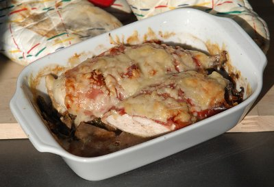

| Zutaten für 2 Personen: | |
| 1 Päckli | Champignons (140 g) |
| einige | Salbeiblätter |
| 1/4 Tl | Salz |
| Pfeffer aus der Mühle | |
| 2 | Pouletbrüstli (je ca. 150g) |
| 4 Tranchen | Rohschinken |
| 50 g | Käse (z.B. Asiago), grob gerieben |
10 Minuten Vorbereiten, 18 Minuten backen
Eine Ofenfeste Form von 1 Liter fetten.
Das Päckli Champignons (140g) mit einigen fein geschnittenen Salbeiblättern mit 1/4 Tl Salz und wenig Pfeffer aus der Mühle mischen. In die Form geben.
Die Pouletbrüstli mit wenig Salz und Pfeffer würzen. Jedes Pouletbrüstli mit 2 Tranchen umwickeln, auf die Pilze legen.
Mit den 50 g Käse bestreuen.
18 Minuten in der Mitte des auf 220°C vorgeheizten Ofens.
Dazu passen Nudeln oder Reis.
Pro Person: 10g Fett, 47g Eiweiss, 1g Kohlenhydrate, 1166kJ (279 kcal)
Betty Bossi Zeitung 10-04
Im Mai 2005 mit Familie Eugster im Stoss zubereitet. Schmeckt hervorragend! Dennoch einfach und schnell zubereitet. Der Salbeigeschmack macht es aus!
Gelang auch am 11.7.2009 sehr schön. RE
@LINKBACK_TAG@ @WAKELOCK@